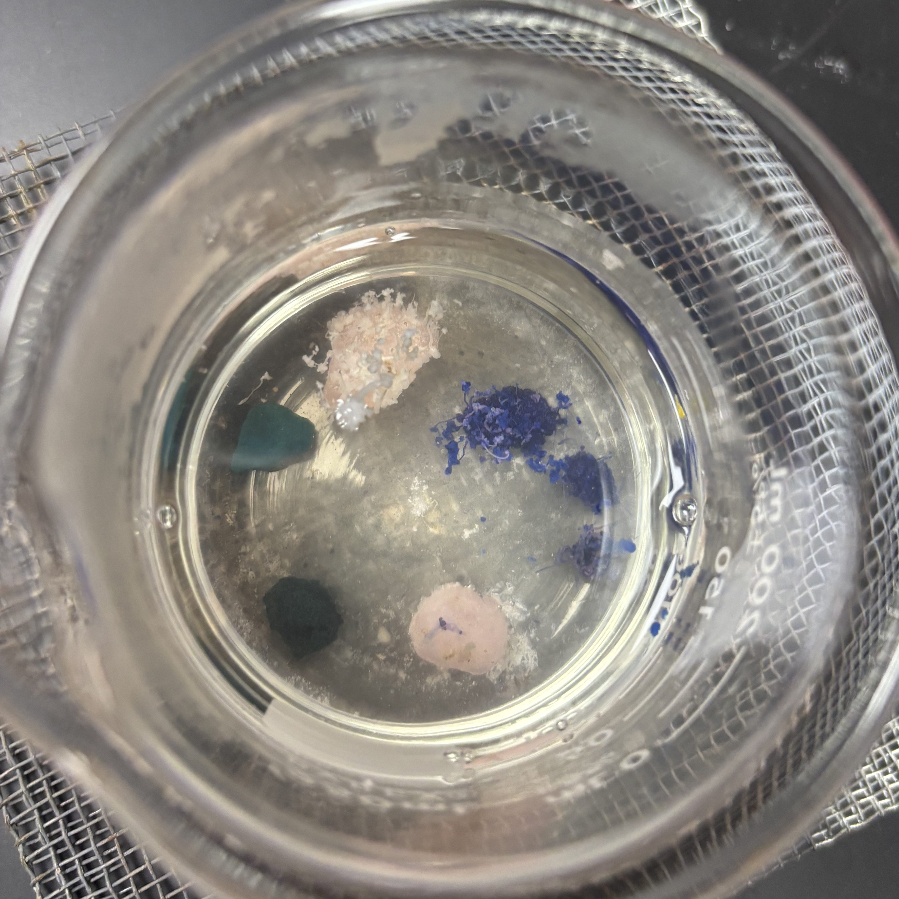
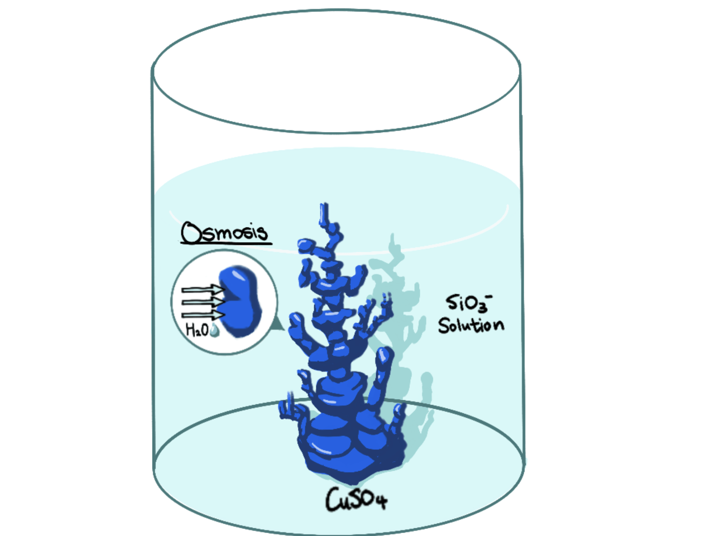
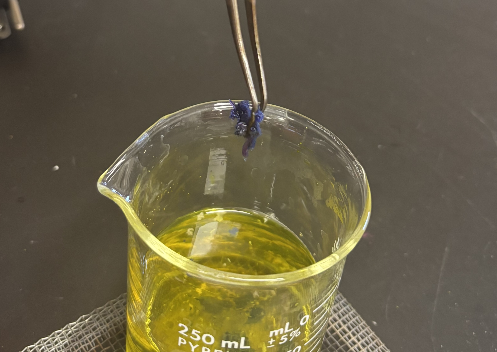

A garden without soil, sunlight, or seeds may sound impossible—but
chemistry makes it real. A chemical garden grows entirely through
reactions and water movement, creating colorful structures that
resemble living plants. Keep reading to explore how simple chemicals
can organize themselves into something that looks alive.
Background Information
Naâ‚‚SiOâ‚? also called the water glass, is a versatile white powdered
solid that is often used in detergents to combat grease in households.
This soluble solid creates a basic solid that can effectively break
down oil in industrial cleaners and fireproofing by softening water.
It is harmful if swallowed, may cause gastrointestinal problems, and
even irritation to the skin.
Purpose
The objective of the lab is to demonstrate colored precipitation in
Naâ‚‚SiOâ‚?solution and explore the underlying principle.
Materials
1 beaker
Water
Solids
25 g Naâ‚‚SiOâ‚?/li>
CuSOâ‚?chunk
CoSOâ‚?chunk
MnClâ‚?chunk
NiSOâ‚?chunk
Stirring rod or equivalent tool
Heating plate
Safety Note
Wear lab safety googles as some chemicals may be poisonous and can splash.
Conduct the following procedure under supervision.
Experimental Procedure
Measure 100 mL water in a beaker
Add 25 g Naâ‚‚SiOâ‚?into beaker
Heat and stir the solution until it turns clear/slightly opaque (should not boil)
Cool solution for 5-7 minutes
Add the solid chunks
Observe the garden grow slowly!

How Does This Work?
When the solids are dropped into the Naâ‚‚SiOâ‚?solution, the metal
dissolves into ions, which reacts with SiOâ‚?. Therefore, a thin layer
of metal silicate membrane form around the metal solid. The membrane
is semi-permeable, which means that it allows some chemicals, like
water, to diffuse through while blocking bigger molecules. As a
result, the inside of the membrane has a greater concentration of ions.
In this case, osmosis is when water passively diffuse through the
semipermeable membrane to balance the concentration in and outside the
membrane. As more water flows in, more pressure builds up due to water
(osmotic) pressure, eventually ruptures the membrane. This is what
happens when the metals “grow�in the solution!

Further Explorations
You can also try changing the solids being used for precipitation.
Does the types of solid, such as insoluble vs. partial soluble solids,
affect the precipitation? Is one faster than the other? Would the
shape of the precipitate change or get more disorganized?

Acknowledgement
Experimentation was conducted with SMES chemistry club.
Citations
Explanation based on standard descriptions of chemical gardens from
the Royal Society of Chemistry, Journal of Chemical Education, and
general chemistry texts.